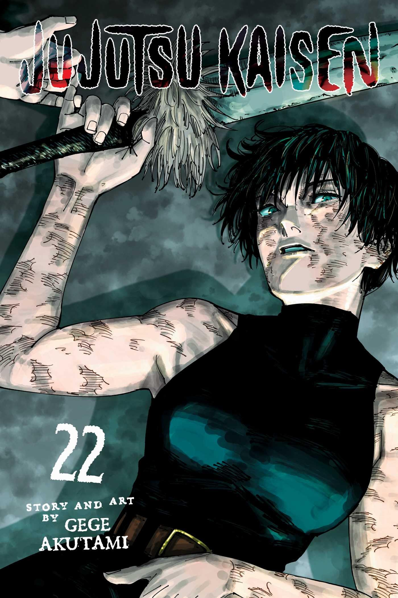

Mais Vendidos
da Semana
Mangás
Livros
Comics
My Hero Academia Vol. 5
A luta mais preocupante do torneio começa! Uraraka terá que enfrentar de frente toda a agressividade de Bakugo, que não é do tipo que pega leve! Ela dispensou a ajuda dos amigos, mas será que tem algum plano especial contra o adversário?! Logo em seguida, também está marcada a luta entre Midoriya e Todoroki…
R$:29,90
Comprar
Chainsaw Man Vol. 14
O lugar escolhido por Asa para seu encontro com Denji foi um aquário!! A garota planeja usar todo seu charme para conquistar o jovem e assim, transformá-lo em uma arma, mas tudo que Denji quer é ver perguins!!Os dois simplesmente não conseguem se dar bem e tudo acaba piorando com a aparição de certo demônio!!
R$:22,14
Comprar
Tokyo Revengers Vol. 1
Tokyo Revengers, Volume 1: Uma Viagem ao Passado para Mudar o Futuro Takemichi Hanagaki, um jovem de 26 anos sem muito sucesso na vida, descobre que sua ex-namorada, Hinata Tachibana, foi assassinada. Em um momento de desespero, ele é jogado nos trilhos do trem e, de alguma forma, viaja 12 anos para o passado.
R$:27,90
Comprar
Berserk Vol. 1
O misterioso Guts, o "Espadachim Negro", carrega em sua mão mecânica uma enorme espada, e em seu pescoço uma estranha marca que atrai forças demoníacas. Em sua busca por vingança contra um antigo inimigo, nem tudo sai a seu favor, e ele recebe ajuda de uma fantástica criatura.
R$:29,90
Comprar

Jujutsu Kaisen Vol. 22
Um espírito amaldiçoado misterioso surge repentinamente na Colônia de Sakurajima, alguém relacionado a Maki que se transformou em uma maldição após a morte!! A feiticeira e Noritoshi são encurralados pelo espírito amaldiçoado que evoluiu de feto a adulto em uma velocidade surpreendente. Nesse momento, surgem novos invasores!
R$:25,83
Comprar
Haikyu!! Vol. 05
Shoyo Hinata é um garoto que resolveu praticar vôlei após presenciar o jogador conhecido como “Pequeno Gigante” em quadra. Ao participar do seu primeiro e único jogo oficial de um torneio do ensino fundamental, ele jura revanche para seu algoz, Tobio Kageyama, e para isso, decide entrar no Colégio Karasuno.
R$:31,76
Comprar
Demon Slayer Vol. 12
Após a intensa batalha contra Gyuutarou e Kokushibo, Tanjiro precisa lidar com as consequências, incluindo a quebra de sua espada. Ele embarca em uma jornada para encontrar um novo ferreiro e consertar sua arma. Enquanto isso, a tensão aumenta entre os Doze Kizuki e novos desafios surgem para Tanjiro e seus amigos. O volume explora o desenvolvimento dos personagens.
R$:26,18
Comprar
Tokyo Ghoul Vol. 2
Além de ter que aceitar sua nova condição como um meio Ghoul, Kaneki precisa aprender com os membros da Anteiku a se comportar como um deles para continuar vivendo entre os humanos. Porém, os recentes eventos ocorridos no Distrito 20 atraem investigadores ao local, e eles não demonstram ter tempo ou disposição para discernir o caráter de seus alvos.
R$:28,80
Comprar
Blue Lock Vol. 22
O egoísmo está em constante mudança!A partida contra a Manshine City é tomada pelo caos!!Na terceira partida da Liga Neo Egoísta, o time de Isagi vira o jogo e está na frente. Mas, tendo sido atrapalhado pelo Kaiser, o nosso herói jura vingança marcando o seu próprio gol!Enquanto isso, Reo também decide evoluir de forma "independente". Só que Nagi lhe propõe que “lutem juntos”…
R$:29,27
Comprar
Vagabond Vol. 2
Takezo retorna à sua vila natal em busca de paz, mas é recebido com hostilidade. Em meio a perseguições, ele enfrenta um monge poderoso e reencontra uma amiga de infância. As lutas de espadas se intensificam enquanto Takezo busca seu caminho e enfrenta dilemas morais. O volume explora a jornada de Takezo em busca de sua identidade como samurai, mostrando a beleza e a brutalidade da vida feudal japonesa.
R$:37,50
Comprar
Vinland Saga Volume 1
Quando criança, Thorfinn, filho do lendário guerreiro viking Thors, vive sem saber o passado do pai, que descobriu após anos no campo de batalha algo mais valioso do que matar seus iguais, viver sua vida de paz. Ao saber os tempos de guerra de seu pai, o garoto se revolta e vai à guerra com ele, mas acaba sendo tarde demais quando reconhece o valor dele.
R$:42,21
Comprar
Bleach Remix - 01
Ichigo Kurosaki, 15 anos. Ocupação: Colegial. E então... O ataque violento de um espírito maligno chamado "Hollow" faz suas irmãs caírem uma após a outra... A única forma de salvá-las é se tornar um Shinigami e lutar! Diante da morte iminente, o colegial Ichigo Kurosaki precisará tomar uma decisão que poderá mudar seu destino...!!
R$:62,00
Comprar
1
2